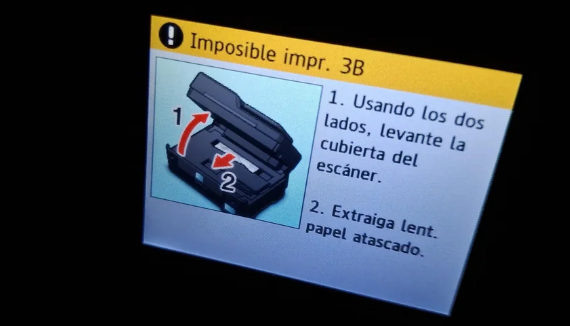
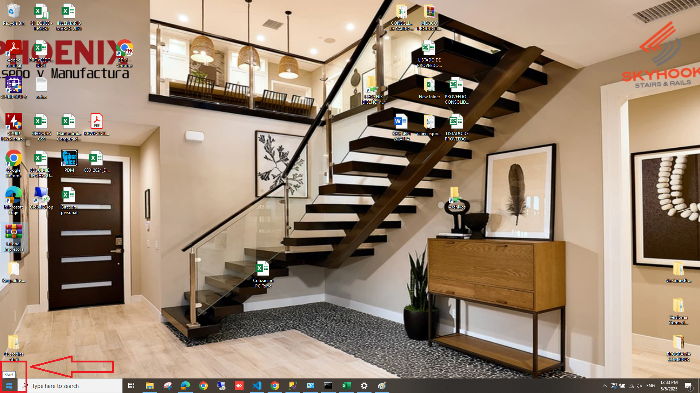
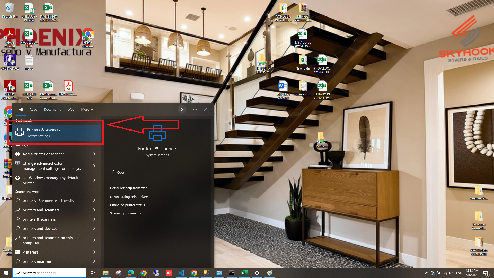
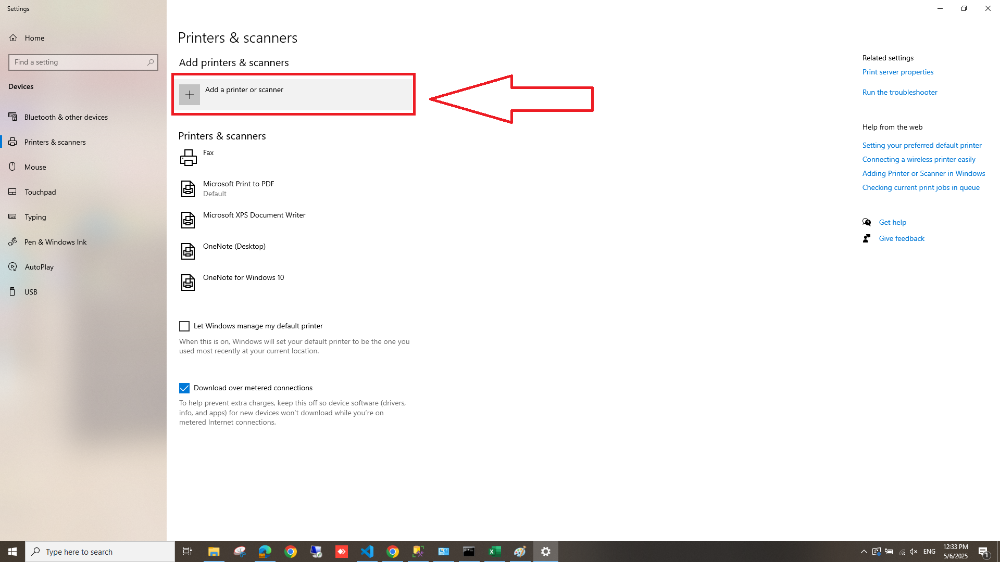
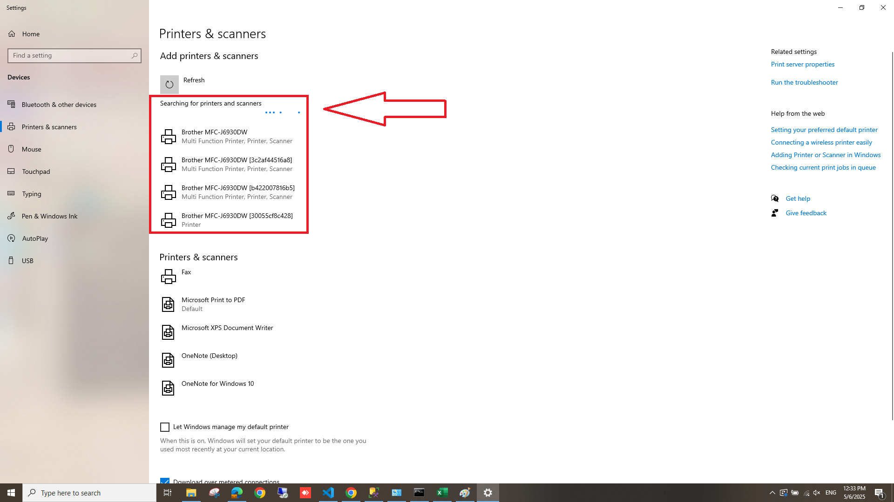
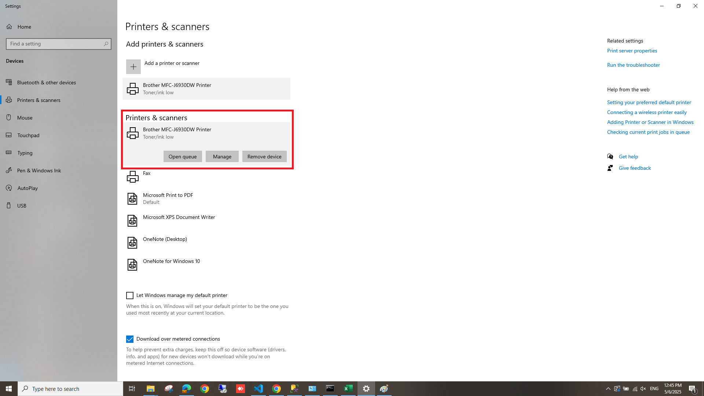

Problemas con la impresora
En la empresa se cuenta con 4 impresoras, las cuales son del mismo modelo, por lo que la diferenciacion es dada por el numero de serie.
3c2af4b9fd4c - P1
30055cf8c428 - Planeacion (antes RH)
3c2af44516a8 - BA
b422007816b5 - QC y Diseño
NOTA: Si la impresora no funciona correctamente, puedes imprimir en otra impresora
Cuando una impresora deja de imprimir se debe a problemas de desconexion de algun tipo.
1.- Verifique que la impresora este agregada correctamente al dispositivo.
2.- Verifique que la impresora que esta agregada sea la correcta (puede que este imprimiendo en otro lugar).
3.- Verifique que el dispositivo se encuentra en la misma red que la impresora (PDM-2024)
Cuando la impresora muestra este mensaje y no imprime.

Rellene el formulario correspondiente para checar de manera fisica la impresora.
Para poder conectar correctamente la impresora a la computadora debe cumplir con estos requisitos previo a la vinculacion:
1.- Debe de estar conectado (ya sea por Wi-Fi o por cable) a la misma red que la impresora.
2.- La impresora debe contar con conexion a internet
Si y solo si las condiciones anteriores se cumplen, debe seguir los siguientes pasos:
Paso 1.- Dar clic izquierdo en el boton de inicio

Paso 2.- Debe escribir "printers" en el recuadro blanco
Paso 3.- Dar clic izquierdo en el primer resultado

Esto abrira la aplicacion de ajustes en la cual se debe realizar lo siguiente:
Paso 1.- Dar clic izquierdo en el boton "Add a printer or scanner" con un icono de +

Esta accion desplegara las impresoras que se encuentran en linea

Paso 2.- Seleccionar la impresora del area de trabajo correspondiente
Paso 3.- Dar clic izquierdo en el boton llamado "Add device"

Esta accion instalara la impresora y la configuracion correspondiente para que funcione la imipresora en la computadora
Para verificar que la impresora esta instalada correctamente, basta ver que la impresora esta en el apartado de "Printers & Scanners"
